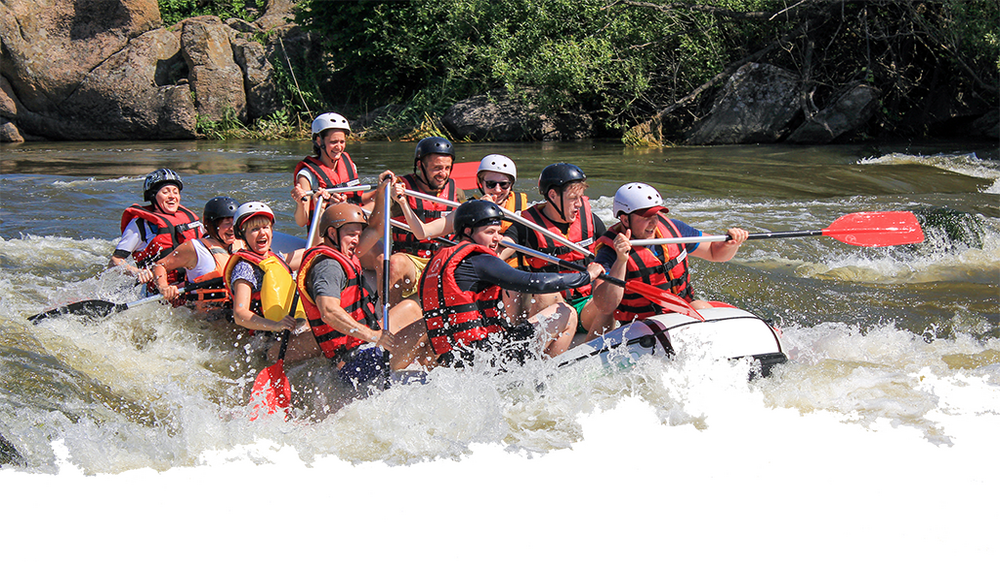
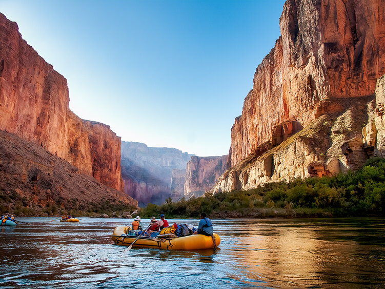
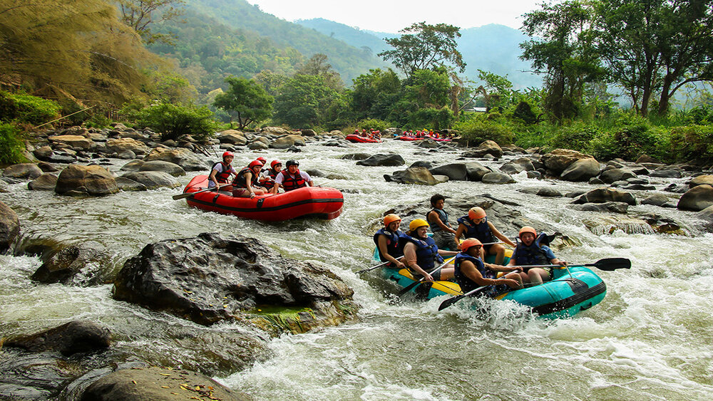

Rivers We run

Main Fork of the Salmon river, Idaho
Nestled deep in the Frank Church Wilderness of No Return winds the Salmon river. It earns its name “The River of No Return” for its wilderness shrouded, roadless section which spans a massive piece of country between the outposts of Salmon and Riggins Idaho. Ancient inhabitants such as the Nez Percé tribe considered the Salmon River country sacred as it provided in abundance the sustenance needed to survive thanks to its abundant salmon and steelhead fishery.

Desolation and Gray Canyon, Utah
Winding through canyons in central Utah, in some of the most desolate land anywhere, the Green river flows towards the mighty Colorado river and the sea. High grey stone cliffs, beautiful desert scenery, and great rapids have made this.